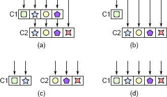
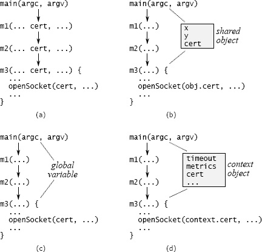

第7章 不同层次，不同抽象
软件系统由多个层次组成，上层使用下层提供的能力。在设计良好的系统中，每层都提供与上下层不同的抽象；追踪一个操作通过方法调用在各层之间流转，会看到每次调用都改变了抽象。例如：
- 文件系统最上层实现文件抽象。文件是可变长度的字节数组，通过读写不同长度的字节区间更新。再下一层实现固定大小磁盘块的内存缓存；调用者可以假定，常用块会保留在内存中，能够快速访问。最底层是设备驱动程序，在外部存储设备与内存之间搬运块。
- TCP 等网络传输协议的最上层抽象，是从一台机器可靠地送达另一台机器的字节流。它建立在下层之上，下层以尽力而为的方式传输大小有限的数据包：大多数包会成功送达，但有些可能丢失或乱序。
系统相邻层次若提供相似抽象，就是危险信号，暗示类的划分可能有问题。本章讨论这类情况、它们造成的问题，以及如何通过重构消除问题。
7.1 透传方法
相邻层次抽象相似时，问题经常表现为透传方法。透传方法除了调用另一个方法，几乎不做其他事，被调方法的签名与调用方法相似或相同。例如，一个学生的 GUI 文本编辑器项目中，有个类几乎完全由透传方法组成。以下是其中一部分：
public class TextDocument ... {
private TextArea textArea;
private TextDocumentListener listener;
...
public Character getLastTypedCharacter() {
return textArea.getLastTypedCharacter();
}
public int getCursorOffset() {
return textArea.getCursorOffset();
}
public void insertString(String textToInsert,
int offset) {
textArea.insertString(textToInsert, offset);
}
public void willInsertString(String stringToInsert, int offset) {
if (listener != null) {
listener.willInsertString(this, stringToInsert, offset);
}
}
...
}
这个类的 15 个公有方法中，13 个是透传方法。
危险信号：透传方法
透传方法仅把参数传给另一个方法，通常两者 API 相同。这往往说明，类之间没有清晰的职责划分。
透传方法使类变浅：它增加接口复杂性，却没有增加系统总体功能。上面四个方法中，只有最后一个贡献了一点功能，而且微乎其微，只是检查一个变量是否有效。透传方法也会在类之间建立依赖：TextArea 的 insertString 签名若改变，TextDocument 的 insertString 就得相应改变。
透传方法说明类的职责划分混乱。上例 TextDocument 提供 insertString 方法，但插入文本的功能完全在 TextArea 中实现。这通常不妥：一项功能的接口应与功能实现放在同一个类中。看到一个类向另一个类透传方法时，应该审视两个类，问自己：“每个类究竟负责哪些功能和抽象？”很可能会发现职责重叠。
解决办法是重构，让每个类拥有明确且内部一致的职责。图 7.1 展示了几种方式。(b) 让上层类的调用者直接访问下层类，从上层类移除对这项功能的全部职责；(c) 在两个类之间重新分配功能；如果两个类难以分开，最佳方案可能是像 (d) 那样合并。
上例中，TextDocument、TextArea、TextDocumentListener 三个类的职责相互交织。学生通过在类之间移动方法，把三个类合为两个，明确区分职责，从而消除了透传方法。
7.2 什么时候接口重复可以接受？
方法签名相同未必是坏事。重要的是，每个新方法都应贡献实质性功能。透传方法的问题，在于没有贡献新功能。
分派器就是调用同签名方法却有实际价值的例子。分派器根据参数，从多个方法中选一个调用，再把大部分或全部参数传给它。分派器与它调用的方法往往签名相同，但仍提供了有用的功能：为每项任务选择应该执行它的方法。

图 7.1：透传方法。(a) 中 C1 包含三个透传方法，仅调用 C2 中签名相同的方法，每种符号表示一种方法签名。(b) 让 C1 的调用者直接调用 C2；(c) 重新分配 C1 与 C2 的功能，避免类间调用；(d) 合并两个类。这三种方式都可以消除透传方法。
例如，Web 服务器收到浏览器的 HTTP 请求后，会调用分派器，检查请求 URL，选择具体处理方法。有些 URL 通过返回磁盘文件内容处理；另一些则调用 PHP 或 JavaScript 等语言编写的过程。分派过程可能相当复杂，通常由一组与传入 URL 匹配的规则驱动。
只要各自提供有用且不同的功能，多个方法拥有相同签名就没有问题。分派器调用的方法符合这一点。另一个例子是具有多种实现的接口，如操作系统的磁盘驱动程序。每个驱动支持不同类型的磁盘，却有相同接口。多个方法为同一接口提供不同实现，可以降低认知负担：用过一个，其他就更容易使用，因为无须学习新接口。这类方法通常处于同一层，并不互相调用。
7.3 装饰器
装饰器设计模式，也称包装器，会鼓励不同层次重复 API。装饰器对象接收已有对象，扩展它的功能，提供与底层对象相似或相同的 API，并在方法中调用底层方法。第 4 章 Java I/O 例子中的 BufferedInputStream 就是装饰器：给它一个 InputStream，它提供相同 API，并增加缓冲。例如，调用它的 read 读取单个字符时，它会调用底层 InputStream 的 read 读取更大的一块，把多余字符存起来，满足后续 read 调用。窗口系统还有一个例子：Window 类实现不可滚动的简单窗口，ScrollableWindow 则为它增加水平与垂直滚动条。
装饰器的目的，是把类的专用扩展与更通用的基础功能分开。但装饰器类往往很浅：为少量新功能引入大量样板代码，还经常包含许多透传方法。装饰器模式很容易用过头，每增加一点小功能就新建一个类，造成浅类数量激增，Java I/O 就是这样的例子。
创建装饰器类之前，先考虑以下替代方案：
- 能否直接把新功能加入底层类？如果新功能比较通用，与底层类在逻辑上相关，或底层类的大多数用法都会需要它，这样做就合理。例如，创建 Java InputStream 的人几乎都会创建 BufferedInputStream，缓冲又是 I/O 很自然的一部分，因此两者本应合并。
- 如果新功能专为某个具体场景服务，能否直接合入该场景的代码，无须单独建类？
- 能否把新功能合并到已有装饰器？这样能得到一个更深的装饰器类，减少多个浅装饰器。
- 最后，新功能是否确实需要包装已有功能？能否实现为独立于基础类的单独类？窗口例子中的滚动条，很可能可以独立于主窗口实现，无须包装其全部已有功能。
装饰器有时合理，但通常有更好的替代方案。
7.4 接口与实现
“不同层次，不同抽象”的另一种应用是：类的接口通常应该有别于实现，内部使用的表示应该与接口中的抽象不同。两者抽象相似，类很可能就不够深。例如，第 6 章文本编辑器项目中，多数小组按文本行实现文本模块，每行单独存储。有些组也围绕行设计 API，提供 getLine、putLine 等方法。但这让文本类浅而难用。上层界面代码经常需要在行中间插入文本，例如用户键入时；也经常需要删除跨行的一段文本。面对按行设计的 API，调用者只能自行拆行、合行，才能实现界面操作。这些代码并不简单，还会重复并散落在界面实现各处。
文本类提供面向字符的接口时，就容易使用得多。例如，insert 可在任意位置插入任意文本字符串，字符串也可包含换行；delete 可删除任意两个位置之间的文本。内部仍按行表示，但面向字符的接口把拆行、合行的复杂性封装在文本类中，使类更深，也简化上层使用代码。此时，文本 API 与按行存储机制明显不同；这种差异代表类提供的有价值功能。
7.5 透传变量
跨层 API 重复还有一种形式：透传变量，即沿一长串方法向下传递的变量。图 7.2(a) 展示了数据中心服务的一个例子。某个命令行参数描述安全通信所用的证书。只有底层方法 m3 需要这项信息，它调用库方法打开套接字；但信息必须经过 main 到 m3 之间的每个方法传下来。cert 变量出现在每个中间方法的签名中。
透传变量增加复杂性，因为所有中间方法都被迫知道它的存在，尽管完全用不到它。而且，新变量出现时，例如系统原本不支持证书，后来决定增加支持，可能要修改许多接口与方法，才能让变量沿所有相关路径传下来。
消除透传变量可能很困难。一种方法是看看最上层和最下层方法是否已经共享某个对象。在图 7.2 的数据中心服务中，也许有一个保存其他网络通信信息的对象，main 和 m3 都能访问。如果有，main 可以把证书信息存入该对象，无须经过通向 m3 的所有中间方法，见图 7.2(b)。但即便有这样的对象，它自己也可能就是透传变量，否则 m3 如何访问它？
另一种方法如图 7.2(c)，把信息存成全局变量。这样无须逐方法传递，但全局变量几乎总会带来其他问题。例如，同一个进程中无法创建同一系统的两个独立实例，因为它们对全局变量的访问会冲突。生产环境可能很少需要多个实例，但测试中常常有用。
我最常采用的办法，是如图 7.2(d) 引入上下文对象。上下文保存应用的全部全局状态，也就是原本会成为透传变量或全局变量的所有信息。多数应用的全局状态有多个变量，表示配置选项、共享子系统、性能计数器等。每个系统实例各有一个上下文对象，让多个实例能够在同一进程中共存。
遗憾的是，许多地方都可能需要上下文，它本身也可能成为透传变量。为了减少必须知道它的方法数量，可以在系统的多数主要对象中保存上下文引用。图 7.2(d) 中，包含 m3 的类把上下文引用存为实例变量。创建新对象时，创建方法从自身所属对象取出上下文引用，传给新对象的构造函数。这样各处都能访问上下文，却只在构造函数中作为显式参数出现。

图 7.2：处理透传变量的几种可能方法。(a) cert 经过 m1、m2 传递，尽管它们并不使用它。(b) main 与 m3 能访问同一个对象，可把变量存在其中，避免经 m1、m2 传递。(c) cert 保存为全局变量。(d) cert 与超时值、性能计数器等其他系统级信息一并保存在上下文对象中；凡是方法需要访问上下文的对象，都保存它的引用。图中 shared object、global variable、context object 分别表示共享对象、全局变量和上下文对象；timeout 表示超时值，metrics 表示性能指标。
上下文对象统一处理系统级全局信息，消除了透传变量的需要。新增变量时，只需加到上下文对象；除了上下文的构造函数与析构函数，已有代码都不受影响。全局状态集中在一处，容易识别和管理。上下文也方便测试：测试代码通过修改字段，就能改变应用的全局配置。如果系统使用透传变量，实现这类变化会困难得多。
上下文远非理想方案。其中的变量仍有全局变量的大多数缺点，例如难以看出某变量为什么存在、在哪里使用。缺乏约束时，上下文可能变成巨大的数据杂物箱，在整个系统中建立隐蔽依赖。它也可能带来线程安全问题，避免问题的最好方式，是让其中的变量不可变。遗憾的是，我还没找到比上下文更好的方案。
7.6 小结
系统每增加一个设计要素，例如接口、参数、函数、类或定义，都会增加复杂性，因为开发者必须了解它。要在降低复杂性方面取得净收益，该要素就必须消除一些原本会存在的复杂性。否则，省去这个要素来实现系统会更好。例如，类可以封装功能，让使用者无须知道内部细节，从而降低复杂性。
“不同层次，不同抽象”正是这一思想的应用。如果不同层次拥有相同抽象，例如透传方法或装饰器，它们提供的收益很可能不足以抵消新增设计要素的成本。同样，透传参数让多个方法都必须知道它的存在，增加复杂性，却没有贡献额外功能。